Weddings & Grooms
A three-piece suit or a bespoke tuxedo for the groom and his party: layering, formality, and a silhouette made for the photographs that last.
Plan a wedding commissionEverything begins against the skin. A custom shirt cut to your measurements, with a collar shaped to sit just so beneath the jacket.
A waistcoat adds layering, formality, and a silhouette no two-piece can replicate. Preferred for weddings, courtrooms, and anyone who understands what a suit is for.
A garment built to your body, not bent to fit it. Your measurements, posture, and preferences guide every seam.
Formal enough for a boardroom, refined enough for an evening. One cloth, one pattern, one intention.
Bespoke tailoring built around your life. Summit Customs builds suits, sport coats, and tuxedos for high-achieving professionals in Salt Lake City, around your measurements, your cloth, and the impression you want to leave. No catalog. No salespeople. No guesswork.
5.0 on GoogleRead reviewsEvery piece is made to measure. Choose the foundation, the cloth, and the details, and Kobe shapes the garment around how you actually live and work.
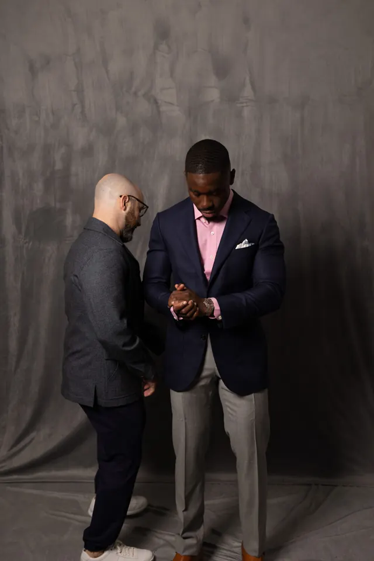
Two or three pieces, cut from one cloth around your measurements. The foundation of your wardrobe.
ExploreA jacket built to stand alone, in a different cloth and a different character. The most versatile garment in a working wardrobe.
ExploreBlack tie done correctly. Peak or shawl lapels in barathea or grosgrain. A garment you own, not rent.
ExploreFrom the boardroom to the altar, every Summit Customs commission starts with what the garment has to do: the occasions already on your calendar and the impression you want to leave.
A three-piece suit or a bespoke tuxedo for the groom and his party: layering, formality, and a silhouette made for the photographs that last.
Plan a wedding commissionTwo-piece and three-piece suits in English and Italian cloth, formal enough for a boardroom and refined enough for the evening after.
Bespoke suitsPeak or shawl lapels faced in satin or grosgrain, jet black or midnight navy barathea. A tuxedo you own, ready for every gala and evening event.
Bespoke tuxedosA sport coat conceived to stand alone, worn with tailored trousers or denim. The most versatile garment in a working wardrobe.
Sport coatsFrom the first conversation through the final fitting, you work directly with Kobe. The goal is not to sell you the most. It is to understand what you need and build the right garment for it.
Work directly with Kobe from the first conversation forward.
Explore cloths and details selected for your style.
Every recommendation begins with your life and your needs.
Meet for your first consultation in person or by video.
A bespoke garment is only as good as it looks and feels when worn. Real fittings, real finished pieces, and the professionals who wear them.
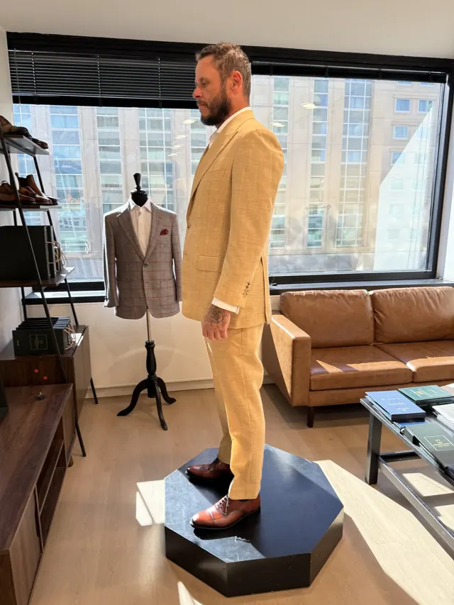
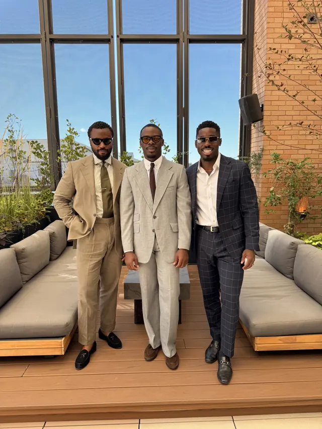
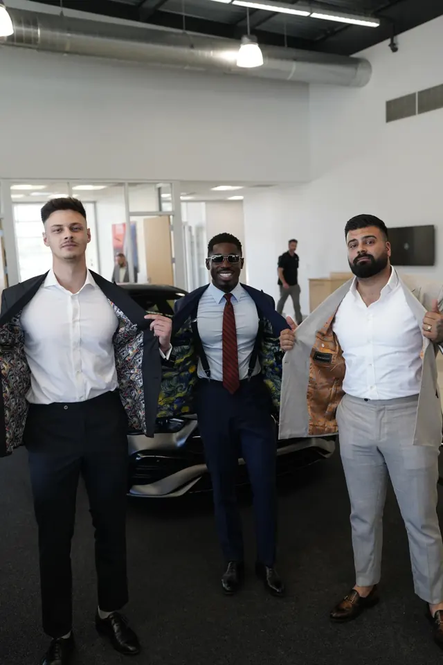
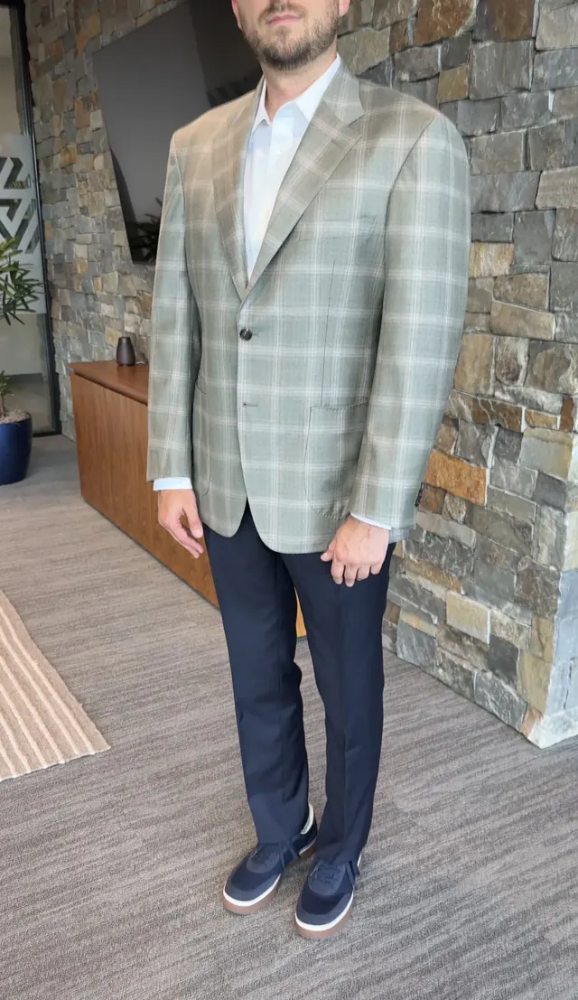
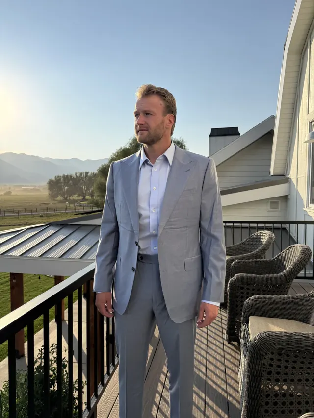
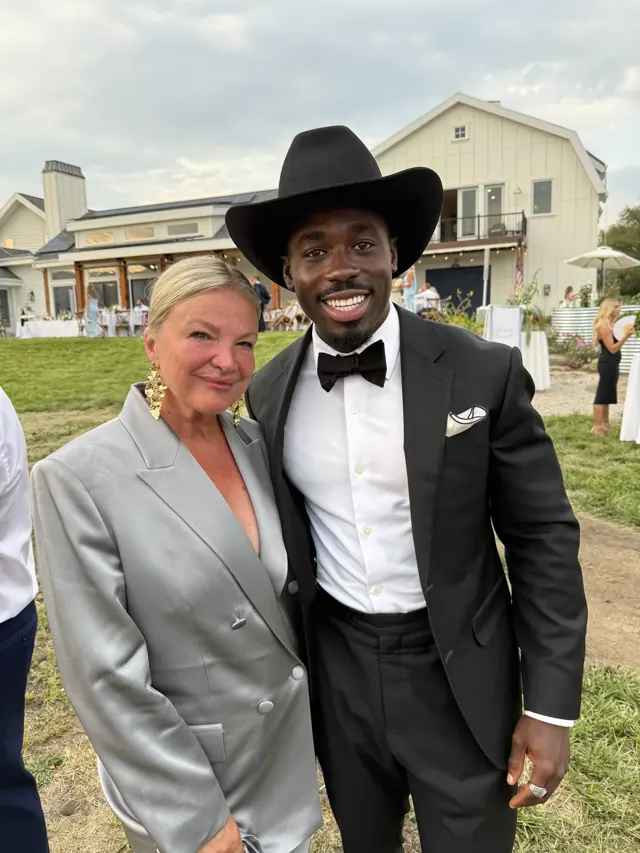
We do not sell suits out of a catalog. We build each garment around your measurements, your needs, and the life you actually lead.
A complimentary private conversation about your goals, your lifestyle, and the impression you want to leave. No pressure, just strategy. Measurements come later, only if you decide to proceed.
Your garment takes shape around your measurements, cloth, and details. Every seam and button is considered together, and your pattern is kept on file for every future order.
You try on something built entirely for you. Final adjustments make sure the garment looks right, feels right, and is ready for the moments ahead.
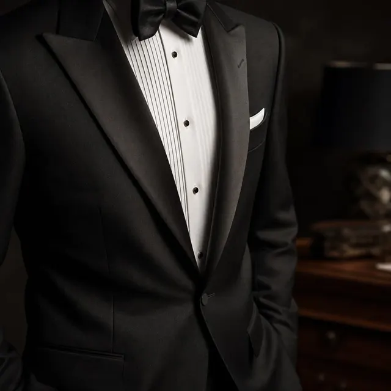
An extensive library from the world's most respected mills: English wools, Italian superfine, Japanese technical weaves, and seasonal linens. You don't need to know the difference between a 120s and a 150s. That's our job. You just need to know how you want to feel when you wear it.
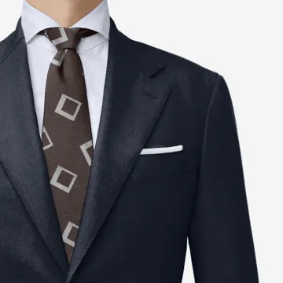
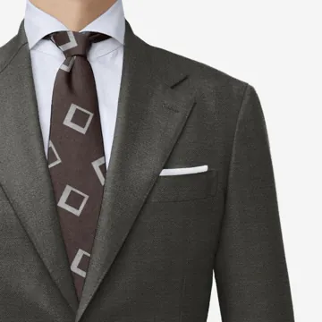
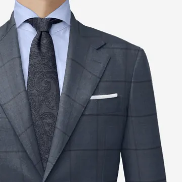
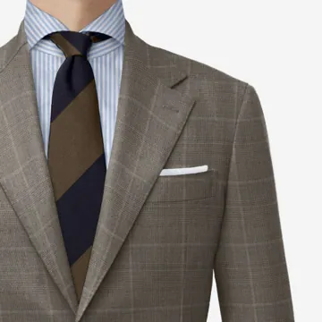
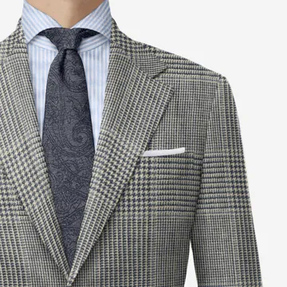
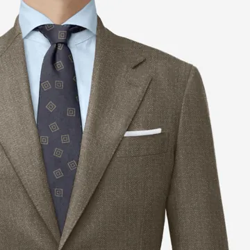
Made-to-order bespoke footwear, handcrafted to your specifications: last, leather, sole, and finish. Goodyear welted, full-grain calf, hand-burnished patinas, no two pairs identical.
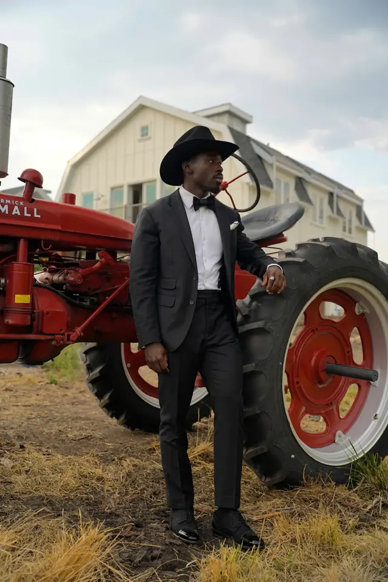
“I don’t believe in trends.
I believe in standards.”
Summit Customs was built for men who understand that presence is power, and that how you show up determines how you're received. A background in high-level sales taught Kobe one thing quickly: the men who win the room don't just speak well; they look like they belong there before they say a word.
From custom suiting to wardrobe refinement, every detail is intentional. No upselling. No trends. No generic advice. Just deeply personal strategy built around you and the life you're living.
Read Kobe's storyEverything you need to know about bespoke tailoring with Summit Customs in Salt Lake City. Anything else, call (801) 866-9718.
Typically 5 to 8 weeks from your first consultation through your final fitting.
Yes. Your first step is a complimentary 30-minute private consultation, in person in Salt Lake City or by video. No measurements are taken yet; the conversation is about your goals, your lifestyle, and the impression you want to leave.
You work directly with founder Kobe Apponsah from the first conversation through the final fitting. You are never handed off to a salesperson.
Two-piece and three-piece suits, sport coats and blazers, tuxedos and evening wear, dress trousers, overcoats, and custom shirts, plus made-to-order Goodyear-welted footwear.
A library of more than 4,000 cloths from respected mills in England, Italy, and Japan, including Dormeuil, Scabal, Vitale Barberis Canonico, and Holland & Sherry. Kobe walks you through the options suited to your climate, occasion, and body.
215 S State St, Suite 575, in downtown Salt Lake City, Utah 84111 (open in Google Maps). Consultations are by appointment, Monday to Saturday, 10am to 6pm Mountain Time. You can also meet by video.
A bespoke tuxedo is cut to your exact measurements in barathea wool, with satin or grosgrain peak or shawl lapels. It is a garment you own for every black-tie occasion ahead, rather than a rented approximation.
Yes. Your measurements, cloth choices, and pattern are kept on file, so every future order starts exactly where the last one left off.
Yes. Three-piece suits are a favourite for weddings, and bespoke tuxedos are cut with peak or shawl lapels in satin or grosgrain, in black or midnight navy. Book early: allow 5 to 8 weeks before the date.
Book a complimentary 30-minute consultation online or call (801) 866-9718. Meet Kobe in person in Salt Lake City or by video, talk through what you need, and decide from there. There is no obligation.
A considered foundation of pieces designed to work together, for example one bespoke suit, three sport coats, and three custom shirts. You can build your capsule online before your consultation and refine it with Kobe.
Every Summit suit is cut for one person only. It begins with a conversation: thirty minutes, in person or by video, about where you're going and what you need your wardrobe to do.